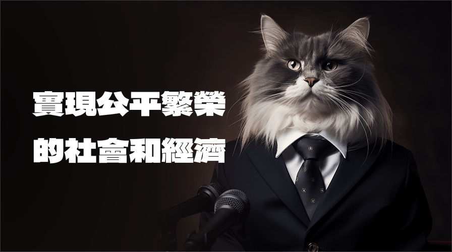

威爾喵政見發表會
發表日期：2023-11-04
在一個熱情洋溢的政治活動中，威爾喵於今日成功舉行了「威爾喵政見發表會」，正式揭開了他的競選政策，旨在改善貓咪們的生活環境，提供貓咪健保制度，制定貓咪法條，以及建立貓咪集會所等福利。在政見發表會的開場白中，威爾喵強調了對貓咪們的承諾，並表示：「貓咪是我們社會中珍貴的一員，他們也應該享有健康、快樂和安全的生活。我們不能忽視他們的需要，而是要為他們的未來做出積極的努力。」
以下是威爾喵提出的主要政策內容：
- 改善貓咪生活環境
威爾喵承諾提供更多的公共空間供貓咪休憩和嬉戲，同時加強城市街道的清潔，以確保貓咪們的生活環境更加安全和舒適。 - 提供貓咪健保制度
他計畫建立貓咪健康保險制度，以確保每隻貓咪都能獲得基本的醫療照護，包括預防措施和緊急醫療服務。 - 貓咪法條
威爾喵提出建立專門的法條，以保護貓咪的權益，包括動物虐待法律和貓咪保護條款。 - 貓咪集會所
他計畫建立社區貓咪集會所，提供貓咪們一個社交和運動的場所，同時鼓勵貓咪與社區居民互動。
政見發表會現場，威爾喵的支持者們紛紛表達對這些政策的支持，並希望能夠為貓咪的福祉共同努力。他們對威爾喵的熱情和決心表示讚賞，認為他將為社會帶來一場真正的變革。 「威爾喵政見發表會」不僅強調了改善貓咪生活環境的迫切性，還彰顯了為了所有生物的幸福而努力的精神。威爾喵希望能夠啟發更多人參與社會和政治，以建立一個更加公平和關懷的社會。